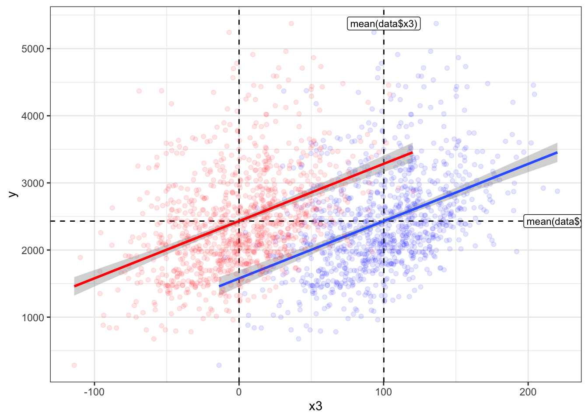
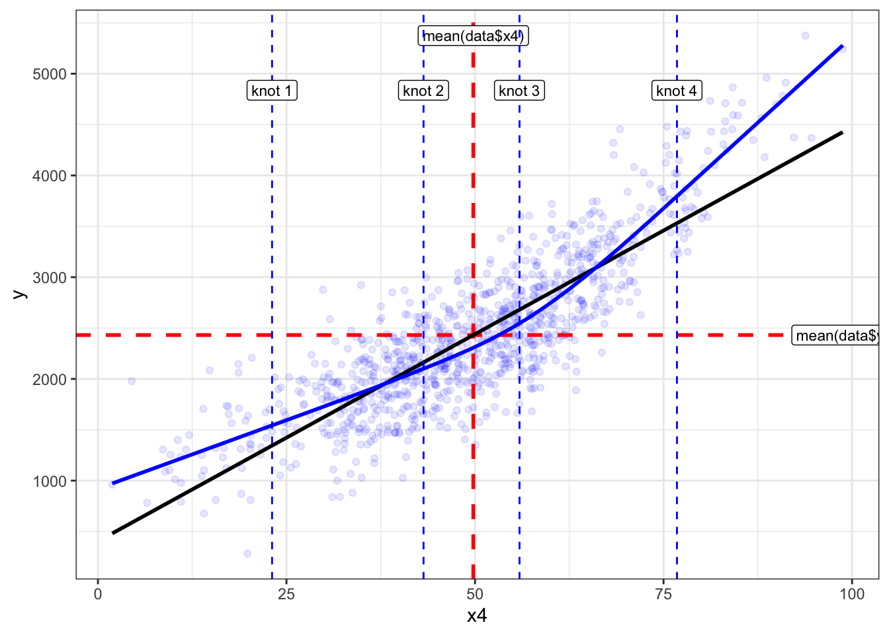
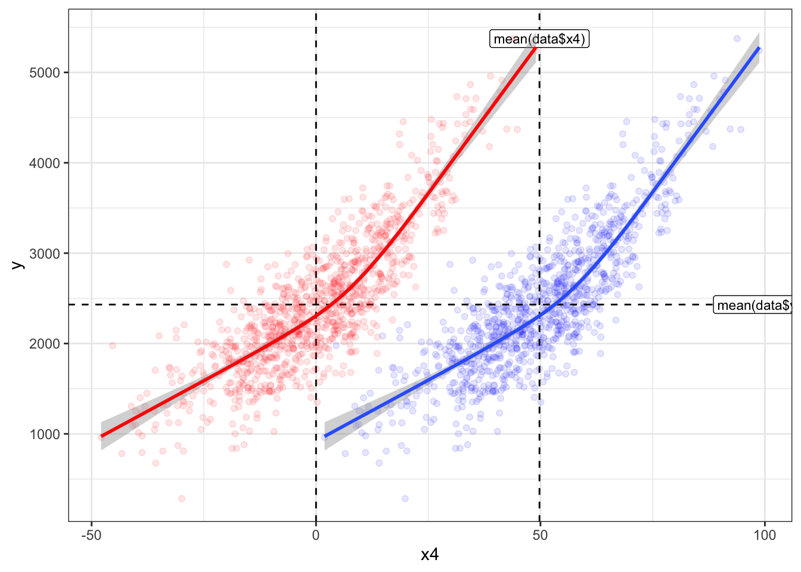

library(dplyr) # Data manipulation
library(ggplot2) # Data visualization
library(ggpubr) # ggarrange
library(fastDummies) # make dummy variables
library(rms)
source("R/util.R")
# functions in "util.R"
# get_rcs: implement the formula of rcs components
# step_dummy: dummy variables
# step_rcs: rcs
# step_interaction: interaction terms
# step_center: centering
# get_mean: get mean values from the original dataset
# root.search: Root searching, not in use in this .qmd fileCentered algorithm with simulated data, without interaction
Simulate data for this tutorial
Resources:
For this tutorial, we will use a simulated dataset with the following predictors:
x1: a categorical/dichotomous variable with 2 categories:cat1,cat2x2: a categorical variable with 3 categories:cat1,cat2,cat3x3: a continuous variable with normal distribution, used as it isx4: a continuous variablewith normal distribution, used with restricted cubic spline (rcs),k_x4 = 4x5: a continuous variable with normal distribution, used as it isx6: a continuous variablewith normal distribution, used with restricted cubic spline (rcs),k_x6 = 3
And we assume the outcome y is a linear combination of the predictors with some noise:
\begin{split} y = & \beta_0 + \\ & \beta_{1_{cat2}}x_{1_{cat2}} + \\ & \beta_{2_{cat2}}x_{2_{cat2}} + \beta_{2_{cat3}}x_{2_{cat3}} + \\ & \beta_3x_3 + \\ & \sum_{j=1}^{k_{x4}-1}{\beta_{4_{rcs_j}}x_{4_{rcs_j}}} + \\ & \beta_5x_5 + \\ & \sum_{j=1}^{k_{x6}-1}{\beta_{6_{rcs_j}}x_{6_{rcs_j}}} \end{split}
n <- 1000
seed <- 100
set.seed(seed)
data <- data.frame(
x1 = sample(
c("cat1", "cat2"),
size = n,
replace = TRUE,
prob = c(0.5, 0.5)
),
x2 = sample(
c("cat1", "cat2", "cat3"),
size = n,
replace = TRUE,
prob = c(0.1, 0.4, 0.5)
),
x3 = rnorm(n, mean = 100, sd = 38),
x4 = rnorm(n, mean = 50, sd = 15),
x5 = rnorm(n, mean = 30, sd = 5),
x6 = rnorm(n, mean = 15, sd = 3),
error = rnorm(n, mean = 0, sd = 3)
)
table(data$x1)
cat1 cat2
516 484 table(data$x2)
cat1 cat2 cat3
113 387 500 # -------- dummy variables --------
vars_cat <- c("x1", "x2")
data <- step_dummy(data, vars_cat)
# -------- rcs --------
# x4
k_x4 <- 4
rcs.fit <- rcs(data$x4, k_x4)
knots_x4 <- attributes(rcs.fit)$parms # knot locations
# x6
k_x6 <- 3
rcs.fit <- rcs(data$x6, k_x6)
knots_x6 <- attributes(rcs.fit)$parms # knot locations
# unpack rcs
vars_rcs <- c("x4", "x6")
knots_list <- list(knots_x4, knots_x6)
knots_list <- setNames(knots_list, vars_rcs)
data <- step_rcs(data, vars_rcs, knots_list)
# outcome
data <- data %>%
mutate(
y = 100 +
3 * x1_cat2 +
2 * x2_cat2 +
0.5 * x2_cat3 +
10 * x3 +
25 * x4_rcs_1 +
18 * x4_rcs_2 +
21 * x4_rcs_3 -
6 * x5 +
0.6 * x6_rcs_1 +
1.5 * x6_rcs_2 +
error
)
head(data) x1 x2 x3 x4 x5 x6 error x1_cat2 x2_cat2
1 cat2 cat3 141.7107 70.23294 29.62502 19.50679 1.2812998 1 0
2 cat2 cat3 144.8794 46.55385 25.26459 14.17968 -0.6942043 1 0
3 cat1 cat2 122.3254 24.01273 30.00188 13.42544 1.2119793 0 1
4 cat2 cat2 140.8946 40.59036 22.37521 14.61245 -1.6497646 1 1
5 cat2 cat3 143.1928 46.39238 30.49176 13.62606 -2.0794212 1 0
6 cat2 cat3 128.8911 29.93634 22.36696 15.83000 -4.1176955 1 0
x2_cat3 x4_rcs_1 x4_rcs_2 x4_rcs_3 x6_rcs_1 x6_rcs_2 y
1 1 70.23294 33.71971549 5.22746340 19.50679 6.7191699 3838.476
2 1 46.55385 4.48108040 0.01336094 14.17968 0.4399275 2653.966
3 0 24.01273 0.00027202 0.00000000 13.42544 0.1800332 1755.103
4 0 40.59036 1.85915181 0.00000000 14.61245 0.6652181 2436.034
5 1 46.39238 4.38920172 0.01153461 13.62606 0.2346131 2597.983
6 1 29.93634 0.11129624 0.00000000 15.83000 1.6637353 2016.497# check
fit <- lm(y ~ x1 + x2 + x3 + rcs(x4, k_x4) + x5 + rcs(x6, k_x6), data = data)
coef(fit) (Intercept) x1cat2 x2cat2 x2cat3
97.918828 3.239879 2.196650 0.607345
x3 rcs(x4, k_x4)x4 rcs(x4, k_x4)x4' rcs(x4, k_x4)x4''
9.994724 25.021974 17.973876 21.016035
x5 rcs(x6, k_x6)x6 rcs(x6, k_x6)x6'
-5.977492 0.671722 1.477125 One predictor
Centered algorithm with a dichotomous predictor
Equation of a simple linear regression model: y = \beta_0 + \beta_1x,\ x=0\ or\ 1. Here, \beta_0 is the mean of y when x=0, and \beta_0 + \beta_1 is the mean of y when x=1. Now, change this into a centered algorithm, and the mean of x is \overline{x} = \frac{n_{x=1}}{n_{x=0}+n_{x=1}}, we have
\begin{split} y &= \beta_0 + \beta_1x \\ &= \beta_0 + \beta_1(x-\overline{x}+\overline{x}) \\ &= (\beta_0 + \beta_1\overline{x}) + \beta_1(x-\overline{x}) \end{split}
If set \beta_{0,new} = \beta_0 + \beta_1\overline{x}, then we have: y = \beta_{0,new} + \beta_1(x-\overline{x})
Here, \beta_{0,new} should be the mean of y within the entire cohort, \overline{y}, let’s check:
\begin{split} \beta_{0,new} &= \beta_0+\beta_1\overline{x} \\ &= \beta_0+\beta_1\frac{n_{x=1}}{n_{x=0}+n_{x=1}} \\ &= \frac{\beta_0(n_{x=0}+n_{x=1}) + \beta_1n_{x=1}}{n_{x=0}+n_{x=1}} \\ &= \frac{\beta_0n_{x=0} + (\beta_0 + \beta_1)n_{x=1}}{n_{x=0}+n_{x=1}} \\&= \overline{y} \end{split}
Therefore, the centered algorithm can be written as y = \overline{y} + \beta_1(x-\overline{x}).
# centering
prop.table(table(data$x1))
cat1 cat2
0.516 0.484 (x_mean <- mean(data$x1_cat2))[1] 0.484data <- data %>%
mutate(x1_cat2_C = x1_cat2 - x_mean)
# --- linear regression model on `x1_cat2` ---
paste0(
"Mean outcome if `x1_cat2 == 0`: ",
mean(data$y[which(data$x1_cat2 == 0)])
)[1] "Mean outcome if `x1_cat2 == 0`: 2379.72272214367"paste0(
"Mean outcome if `x1_cat2 == 1`: ",
mean(data$y[which(data$x1_cat2 == 1)])
)[1] "Mean outcome if `x1_cat2 == 1`: 2485.79163383975"fit <- lm(y ~ x1, data = data)
coef(fit)(Intercept) x1cat2
2379.7227 106.0689 sum(coef(fit)) # beta_0 + beta_1[1] 2485.792# --- linear regression model on centered variable `x1_C` ---"
paste0("Mean outcome in the dataset: ", mean(data$y))[1] "Mean outcome in the dataset: 2431.06007540457"fit <- lm(y ~ x1_cat2_C, data = data)
coef(fit)(Intercept) x1_cat2_C
2431.0601 106.0689 Centered algorithm with a categorical predictor
First, the categorical variable needs to be transformed into dummy variables. A categorical variable x with m levels: cat_1, cat_2,…, cat_m, can be transformed into m-1 dummy variables. Suppose m=3, then we have:
x_{cat_2} = \begin{cases} 1 ,& x = cat_2 \\ 0 ,& otherwise \end{cases}
and
x_{cat_3} = \begin{cases} 1 ,& x = cat_3 \\ 0 ,& otherwise \end{cases}
Then, when x = cat_1, x_{cat_2} = x_{cat_3} = 0.
Equation of a simple linear regression model: y = \beta_0 + \beta_{cat_2}x_{cat_2}+ \beta_{cat_3}x_{cat_3}. Here, \beta_0 is the mean of y when x = cat_1, \beta_0 + \beta_{cat_2} is the mean of y when x=cat_2, and \beta_0 + \beta_{cat_3} is the mean of y when x=cat_3. Now, change this into a centered algorithm:
\begin{split} y &= \beta_0 + \beta_{cat_2}x_{cat_2} + \beta_{cat_3}x_{cat_3} \\ &= \beta_0 + \beta_{cat_2}(x_{cat_2} - \overline{x_{cat_2}} + \overline{x_{cat_2}}) + \beta_{cat_3}(x_{cat_3} - \overline{x_{cat_3}} + \overline{x_{cat_3}}) \\ &= (\beta_0 + \beta_{cat_2}\overline{x_{cat_2}} + \beta_{cat_3}\overline{x_{cat_3}}) + \beta_{cat_2}(x_{cat_2} - \overline{x_{cat_2}}) + \beta_{cat_3}(x_{cat_3} - \overline{x_{cat_3}}) \end{split}
If set \beta_{0,new} = \beta_0 + \beta_{cat_2}\overline{x_{cat_2}} + \beta_{cat_3}\overline{x_{cat_3}}, then we have: y = \beta_{0,new} + \beta_{cat_2}(x_{cat_2} - \overline{x_{cat_2}}) + \beta_{cat_3}(x_{cat_3} - \overline{x_{cat_3}})
Here, \beta_{0,new} should be the mean of y within the entire cohort, \overline{y}, let’s check:
\begin{split} \beta_{0,new} &= \beta_0+\beta_{cat_2}\overline{x_{cat_2}}+\beta_{cat_3}\overline{x_{cat_3}} \\ &= \beta_0+\beta_{cat_2}\frac{n_{cat_2}}{n_{cat_1}+n_{cat_2}+n_{cat_3}}+\beta_{cat_3}\frac{n_{cat_3}}{n_{cat_1}+n_{cat_2}+n_{cat_3}} \\ &= \frac{\beta_0(n_{cat_1}+n_{cat_2}+n_{cat_3}) + \beta_{cat_2}n_{cat_2} + \beta_{cat_3}n_{cat_3}}{n_{cat_1}+n_{cat_2}+n_{cat_3}} \\ &= \frac{\beta_0n_{cat_1} + (\beta_0 + \beta_{cat_2})n_{cat_2} + (\beta_0 + \beta_{cat_3})n_{cat_3}}{n_{cat_1}+n_{cat_2}+n_{cat_3}} \\ &= \overline{y} \end{split}
Therefore, the centered algorithm can be written as y = \overline{y} + \beta_{cat_2}(x_{cat_2} - \overline{x_{cat_2}}) + \beta_{cat_3}(x_{cat_3} - \overline{x_{cat_3}}).
prop.table(table(data$x2))
cat1 cat2 cat3
0.113 0.387 0.500 # centering
(x2_cat2_mean <- mean(data$x2_cat2))[1] 0.387(x2_cat3_mean <- mean(data$x2_cat3))[1] 0.5data <- data %>%
mutate(x2_cat2_C = x2_cat2 - x2_cat2_mean, x2_cat3_C = x2_cat3 - x2_cat3_mean)
# --- linear regression model on `x2` ---"
paste0(
"Mean outcome if `x2 == cat1`: ",
mean(data$y[which(data$x2 == "cat1")])
)[1] "Mean outcome if `x2 == cat1`: 2421.75029945043"paste0(
"Mean outcome if `x2 == cat2`: ",
mean(data$y[which(data$x2 == "cat2")])
)[1] "Mean outcome if `x2 == cat2`: 2415.32065370869"paste0(
"Mean outcome if `x2 == cat3`: ",
mean(data$y[which(data$x2 == "cat3")])
)[1] "Mean outcome if `x2 == cat3`: 2445.34639716282"fit <- lm(y ~ x2, data = data)
coef(fit)(Intercept) x2cat2 x2cat3
2421.750299 -6.429646 23.596098 sum(coef(fit)[c(1, 2)]) # beta_0 + beta_cat_2[1] 2415.321sum(coef(fit)[c(1, 3)]) # beta_0 + beta_cat_3[1] 2445.346# --- linear regression model on `x2_cat2 + x2_cat3` ---"
# confirm that the results are the same as above
fit <- lm(y ~ x2_cat2 + x2_cat3, data = data)
coef(fit)(Intercept) x2_cat2 x2_cat3
2421.750299 -6.429646 23.596098 # --- linear regression model on centered variable `x2_cat2_C + x2_cat3_C` ---"
paste0("Mean outcome in the dataset: ", mean(data$y))[1] "Mean outcome in the dataset: 2431.06007540457"fit <- lm(y ~ x2_cat2_C + x2_cat3_C, data = data)
coef(fit)(Intercept) x2_cat2_C x2_cat3_C
2431.060075 -6.429646 23.596098 Centered algorithm with a continuous predictor as it is
Equation of a simple linear regression model: y = \beta_0 + \beta_1x. Here, \beta_0 is the value of y when x=0, and \beta_1 is the change of y when x increases by 1. Now, change this into a centered algorithm, we have
\begin{split} y &= \beta_0 + \beta_1x \\ &= \beta_0 + \beta_1(x-\overline{x}+\overline{x}) \\ &= (\beta_0 + \beta_1\overline{x}) + \beta_1(x-\overline{x}) \end{split}
If set \beta_{0,new} = \beta_0 + \beta_1\overline{x}, then we have: y = \beta_{0,new} + \beta_1(x-\overline{x}). Note by definition of linear regression, the value of y when x=\overline{x} is also \beta_0 + \beta_1\overline{x}.
Here, \beta_{0,new} should be the mean of y within the entire cohort, \overline{y}, let’s check:
\begin{split} \beta_{0,new} &= \beta_0+\beta_1\overline{x} \\ &= \beta_0+\beta_1\frac{\sum_i^n(x_i)}{n} \\ &= \frac{n\beta_0 + \beta_1\sum_i^n(x_i)}{n} \\ &= \frac{\sum_i^n(\beta_0 + \beta_1x_i)}{n} \\ &= \frac{\sum_i^ny_i}{n} \\ &= \overline{y} \end{split}
Therefore, the centered algorithm can be written as y = \overline{y} + \beta_1(x-\overline{x}).
(x_mean <- mean(data$x3))[1] 100.1576data <- data %>%
mutate(x3_C = x3 - x_mean)
# Using the centered `x3_C` (red) instead of `x3` (blue) essentially moves the data horizontally to the left by `x_mean`.
ggplot(data, aes(x3, y)) +
geom_point(color = "blue", alpha = 0.1) +
geom_hline(yintercept = mean(data$y), color = "black", linetype = "dashed") +
annotate(
"label",
x = max(data$x3),
y = mean(data$y),
label = "mean(data$y)",
size = unit(3, "pt")
) +
geom_vline(xintercept = mean(data$x3), color = "black", linetype = "dashed") +
annotate(
"label",
x = mean(data$x3),
y = max(data$y),
label = "mean(data$x3)",
size = unit(3, "pt")
) +
geom_vline(xintercept = 0, linetype = "dashed") +
geom_smooth(method = "lm", formula = "y ~ x") +
geom_point(aes(x3_C, y), color = "red", alpha = 0.1) +
geom_smooth(aes(x3_C, y), method = "lm", formula = "y ~ x", color = "red") +
theme_bw()
paste0("Mean outcome in the dataset: ", mean(data$y))[1] "Mean outcome in the dataset: 2431.06007540457"# --- linear regression model on `x3` ---
fit <- lm(y ~ x3, data = data)
coef(fit)(Intercept) x3
1577.231550 8.524852 coef(fit)[1] + coef(fit)[2] * x_mean(Intercept)
2431.06 # --- linear regression model on centered variable `x3_C` ---
fit <- lm(y ~ x3_C, data = data)
coef(fit)(Intercept) x3_C
2431.060075 8.524852 Centered algorithm with a continuous predictor using restricted cubic spline (rcs)
Note: this is a newer version where treat rcs as (k-1) independent variables. For the original idea that to find the root as the offest instead of x_mean, please see the .qmd file with the same file name in the backup folder.
The centered algorithm with a rcs is similar to
The linear regression with a rcs with k knots can be written as y=\beta_0+\sum_{j=1}^{k-1}{\beta_{rcs_j}x_{rcs_j}}.
Components of rcs
Below we use rms::rcs, for more information, like the default knot locations, see ?Hmisc::rcspline.eval.
Equations for restricted cubic spline with j = 1,...,k knots:
x_{rcs_1} = x,\ j=1
x_{rcs_{j}} = {(\frac{x-knot_{j-1}}{(knot_k-knot_1)^{\frac{2}{3}}})}_+^{3} + \frac{(knot_{k-1}-knot_{j-1}){(\frac{x-knot_k}{(knot_k-knot_1)^{\frac{2}{3}}})}_+^{3}- (knot_k-knot_{j-1}){(\frac{x-knot_{k-1}}{(knot_k-knot_1)^{\frac{2}{3}}})}_+^{3}}{knot_k-knot_{k-1}},\ j=2,...,k-1
where:
(x - knot)_+ = \begin{cases} x - knot&,\ x - knot>0 \\ 0&, \ x - knot\le0 \end{cases}
In the example below, we use k = 4:
# check above formula
rcs.fit <- rcs(data$x4, k_x4)
knots <- attributes(rcs.fit)$parms # knot locations
res <- labelled::remove_attributes(
rcs.fit,
names(attributes(rcs.fit))[3:length(names(attributes(rcs.fit)))]
) # don't print the attributes
print(head(res)) data data' data''
[1,] 70.23294 33.71971549 5.22746340
[2,] 46.55385 4.48108040 0.01336094
[3,] 24.01273 0.00027202 0.00000000
[4,] 40.59036 1.85915181 0.00000000
[5,] 46.39238 4.38920172 0.01153461
[6,] 29.93634 0.11129624 0.00000000res <- get_rcs(data$x4, knots)
print(head(res)) rcs.1 rcs.2 rcs.3
[1,] 70.23294 33.71971549 5.22746340
[2,] 46.55385 4.48108040 0.01336094
[3,] 24.01273 0.00027202 0.00000000
[4,] 40.59036 1.85915181 0.00000000
[5,] 46.39238 4.38920172 0.01153461
[6,] 29.93634 0.11129624 0.00000000Linear regression with rcs
However, the coefficients of y=\beta_0+\sum_{j=1}^{k-1}{\beta_{rcs_j}x_{rcs_j}} no longer have the explainability like the simple linear regression. Note: based on the knot locations, when x_{rcs_j}=0, \sum_{j=1}^{k-1}{\beta_{rcs_j}x_{rcs_j}} is not necessarily equal to 0, therefore \beta_0 doesn’t represent the value of y when x_{rcs_j}=0. Also, when x=\overline{x}, the predicted y is not equal to \overline{y}, see the figure below: where the linear regression lines of y ~ x4 and y ~ rcs(x4,k) are represented by black and blue, respectively.
ggplot(data, aes(x4, y)) +
geom_point(color = "blue", alpha = 0.1) +
geom_hline(
yintercept = mean(data$y),
color = "red",
linetype = "dashed",
linewidth = 1
) +
annotate(
"label",
x = max(data$x4),
y = mean(data$y),
label = "mean(data$y)",
size = unit(3, "pt")
) +
geom_vline(
xintercept = mean(data$x4),
color = "red",
linetype = "dashed",
linewidth = 1
) +
annotate(
"label",
x = mean(data$x4),
y = max(data$y),
label = "mean(data$x4)",
size = unit(3, "pt")
) +
geom_smooth(method = "lm", formula = y ~ x, color = "black", se = F) +
geom_smooth(
method = "lm",
formula = y ~ rcs(x, k_x4),
color = "blue",
se = F
) +
geom_vline(
xintercept = attributes(rcs.fit)$parms,
color = "blue",
linetype = "dashed"
) +
annotate(
"label",
x = attributes(rcs.fit)$parms,
y = max(data$y) * 0.9,
label = paste0("knot ", 1:k_x4),
size = unit(3, "pt")
) +
theme_bw()
Centered algorithm using rcs: using x_mean
As expected, the rcs of the centered x4_C is the rcs of x4 moving horizontally by mean(data$x4), i.e., \overline{x}. As for coefficients of regression, the only difference is in Intercept, and the difference is by \beta_{rcs_1}\overline{x}. Unfortunately, the intercept of the centered algorithm is not equal to \overline{y} like other scenarios above. And the predicted y when (x-\overline{x}) = 0 using the centered algorithm is not equal to \overline{y} either.
(x_mean <- mean(data$x4))[1] 49.77636data <- data %>%
mutate(x4_C = x4 - x_mean)
ggplot(data, aes(x4, y)) +
geom_point(color = "blue", alpha = 0.1) +
geom_hline(yintercept = mean(data$y), color = "black", linetype = "dashed") +
annotate(
"label",
x = max(data$x4),
y = mean(data$y),
label = "mean(data$y)",
size = unit(3, "pt")
) +
geom_vline(xintercept = mean(data$x4), color = "black", linetype = "dashed") +
annotate(
"label",
x = mean(data$x4),
y = max(data$y),
label = "mean(data$x4)",
size = unit(3, "pt")
) +
geom_vline(xintercept = 0, linetype = "dashed") +
geom_smooth(method = "lm", formula = y ~ rcs(x, k_x4)) +
geom_point(aes(x4_C, y), color = "red", alpha = 0.1) +
geom_smooth(
aes(x4_C, y),
method = "lm",
formula = y ~ rcs(x, k_x4),
color = "red"
) +
theme_bw()
rcs.fit <- rcs(data$x4, k_x4)
# knot locations
attributes(rcs.fit)$parms[1] 23.09059 43.17678 55.90154 76.78031# knot locations when using `x4_C`
rcs.fit.C <- rcs(data$x4_C, k_x4)
attributes(rcs.fit.C)$parms[1] -26.685764 -6.599573 6.125186 27.003954attributes(rcs.fit.C)$parms + x_mean[1] 23.09059 43.17678 55.90154 76.78031# And only the `data` column is affected,
# for other columns, the horizontal change was cancelled out.
head(labelled::remove_attributes(
rcs.fit,
names(attributes(rcs.fit))[3:length(names(attributes(rcs.fit)))]
)) # don't print the attributes data data' data''
[1,] 70.23294 33.71971549 5.22746340
[2,] 46.55385 4.48108040 0.01336094
[3,] 24.01273 0.00027202 0.00000000
[4,] 40.59036 1.85915181 0.00000000
[5,] 46.39238 4.38920172 0.01153461
[6,] 29.93634 0.11129624 0.00000000head(labelled::remove_attributes(
rcs.fit.C,
names(attributes(rcs.fit.C))[3:length(names(attributes(rcs.fit.C)))]
)) # don't print the attributes data data' data''
[1,] 20.456585 33.71971549 5.22746340
[2,] -3.222505 4.48108040 0.01336094
[3,] -25.763629 0.00027202 0.00000000
[4,] -9.185993 1.85915181 0.00000000
[5,] -3.383975 4.38920172 0.01153461
[6,] -19.840016 0.11129624 0.00000000# --- linear regression model on `rcs(x4,k_x4)` ---
fit <- lm(y ~ rcs(x4, k_x4), data = data)
coef(fit) (Intercept) rcs(x4, k_x4)x4 rcs(x4, k_x4)x4' rcs(x4, k_x4)x4''
921.293864 26.926899 5.801591 67.152495 # --- linear regression model on centered variable `rcs(x4_C,k_x4)` ---
fit.C <- lm(y ~ rcs(x4_C, k_x4), data = data)
coef(fit.C) (Intercept) rcs(x4_C, k_x4)x4_C rcs(x4_C, k_x4)x4_C'
2261.616811 26.926899 5.801591
rcs(x4_C, k_x4)x4_C''
67.152495 # difference between the two intercepts
coef(fit)[1] + coef(fit)[2] * x_mean(Intercept)
2261.617 # prediction using the centered algorithm when x = 0
paste0("Mean outcome in the dataset: ", mean(data$y))[1] "Mean outcome in the dataset: 2431.06007540457"predict(fit.C, newdata = data.frame(x4_C = 0)) 1
2306.561 Instead of finding the root (see file in the “backup” folder), treat rcs as (k-1) variables
# --- linear regression model on the original variable 'rcs(x4,k_x4)' ---
fit <- lm(y ~ rcs(x4, k_x4), data = data)
coef(fit) (Intercept) rcs(x4, k_x4)x4 rcs(x4, k_x4)x4' rcs(x4, k_x4)x4''
921.293864 26.926899 5.801591 67.152495 # --- linear regression model on the original variable 'rcs(x4,k_x4)', but with rcs terms ---
# confirm if it's the same as above
fit <- lm(y ~ x4_rcs_1 + x4_rcs_2 + x4_rcs_3, data = data)
coef(fit)(Intercept) x4_rcs_1 x4_rcs_2 x4_rcs_3
921.293864 26.926899 5.801591 67.152495 # centering the rcs terms instead of x4
(x_mean_1 <- mean(data$x4_rcs_1))[1] 49.77636(x_mean_2 <- mean(data$x4_rcs_2))[1] 12.21043(x_mean_3 <- mean(data$x4_rcs_3))[1] 1.46835data <- data %>%
mutate(
x4_rcs_1_C = x4_rcs_1 - x_mean_1,
x4_rcs_2_C = x4_rcs_2 - x_mean_2,
x4_rcs_3_C = x4_rcs_3 - x_mean_3
)
# rcs.fit.C <- rcs(data$x4_C, k_x4)
# res <- labelled::remove_attributes(
# rcs.fit.C,
# names(attributes(rcs.fit.C))[3:length(names(attributes(rcs.fit.C)))]
# )
# head(res)
# head(data %>% select(x4_rcs_1_C, x4_rcs_2_C, x4_rcs_3_C))
# --- linear regression model on centered rcs terms "x4_rcs_1_C", "x4_rcs_2_C", "x4_rcs_3_C" ---
# confirm if it's the same as above
paste0("Mean outcome in the dataset: ", mean(data$y))[1] "Mean outcome in the dataset: 2431.06007540457"fit <- lm(y ~ x4_rcs_1_C + x4_rcs_2_C + x4_rcs_3_C, data = data)
coef(fit)(Intercept) x4_rcs_1_C x4_rcs_2_C x4_rcs_3_C
2431.060075 26.926899 5.801591 67.152495 Two predictors
Centered algorithm for two categorical predictors
I will not repeat the math here, just use below code to confirm that the intercept (\beta_0) of the centered algorithm is still \overline{y}, and values of other coefficients are not affected by centering.
# --- linear regression model on `x1` and `x2` ---"
fit <- lm(y ~ x1 + x2, data = data)
coef(fit)(Intercept) x1cat2 x2cat2 x2cat3
2368.529601 105.507701 -2.282296 24.695992 # --- linear regression model on centered variable ---"
paste0("Mean outcome in the dataset: ", mean(data$y))[1] "Mean outcome in the dataset: 2431.06007540457"fit <- lm(y ~ x1_cat2_C + x2_cat2_C + x2_cat3_C, data = data)
coef(fit)(Intercept) x1_cat2_C x2_cat2_C x2_cat3_C
2431.060075 105.507701 -2.282296 24.695992 Centered algorithm for a categorical predictor and a continuous predictor
I will not repeat the math here, just use below code to confirm that the intercept (\beta_0) of the centered algorithm is still \overline{y}, and values of other coefficients are not affected by centering.
# --- linear regression model on `x2`, `x3` ---
fit <- lm(y ~ x2 + x3, data = data)
coef(fit)(Intercept) x2cat2 x2cat3 x3
1534.953374 10.535320 68.185854 8.565868 # --- linear regression model on centered variable ---
paste0("Mean outcome in the dataset: ", mean(data$y))[1] "Mean outcome in the dataset: 2431.06007540457"fit <- lm(y ~ x2_cat2_C + x2_cat3_C + x3_C, data = data)
coef(fit)(Intercept) x2_cat2_C x2_cat3_C x3_C
2431.060075 10.535320 68.185854 8.565868 One thing to clarify is that, in the scenario when there is data of only one variable (say x2 = cat1), and missing for the other (x3, and imputed with mean value of x2), the predicted y is not equal to mean(y) when x2 = cat1, but rather to y when x2 = cat1 and x3 = mean(x3).
df <- data.frame(
x2 = "cat1",
x3 = NA
)
# -------- dummy variables --------
vars_cat <- c("x2")
labList <- list(x2 = c("cat1", "cat2", "cat3"))
df <- step_dummy(df, vars_cat,labList)
# -------- centering --------
vars_mean <- names(df)
# get mean values from the ORIGINAL dataset
means <- get_mean(data, vars_mean)
# centering vars in the df dataset
vars_center <- names(means)
df <- step_center(df, vars_center, means)
# -------- replace NAs using 0 -------------
for (var_C in paste0(vars_center, "_C")) {
df[[var_C]] <- ifelse(is.na(df[[var_C]]), 0, df[[var_C]])
}
paste0("Mean outcome if `x2 == cat1`: ", mean(data$y[which(data$x2 == "cat1")]))[1] "Mean outcome if `x2 == cat1`: 2421.75029945043"paste0("Predicted value: ", predict(fit, newdata = df))[1] "Predicted value: 2392.88997988061"Centered algorithm for two continuous predictors without rcs
I will not repeat the math here, just use below code to confirm that the intercept (\beta_0) of the centered algorithm is still \overline{y}, and values of other coefficients are not affected by centering.
x_mean <- mean(data$x5)
data <- data %>%
mutate(x5_C = x5 - x_mean)
# --- linear regression model on `x3` and `x5` ---
fit <- lm(y ~ x3 + x5, data = data)
coef(fit)(Intercept) x3 x5
1814.000542 8.428264 -7.565390 # --- linear regression model on centered variable `x3_C` and `x5_C` ---
paste0("Mean outcome in the dataset: ", mean(data$y))[1] "Mean outcome in the dataset: 2431.06007540457"fit <- lm(y ~ x3_C + x5_C, data = data)
coef(fit)(Intercept) x3_C x5_C
2431.060075 8.428264 -7.565390 Centered algorithm for a categorical predictor and a continuous predictor with rcs
# --- linear regression model on original variables 'x2', 'rcs(x4, k_x4)' ---
fit <- lm(y ~ x2 + rcs(x4, k_x4), data = data)
coef(fit) (Intercept) x2cat2 x2cat3 rcs(x4, k_x4)x4
950.139105 -16.606207 -45.041064 26.903040
rcs(x4, k_x4)x4' rcs(x4, k_x4)x4''
5.966036 66.663192 # --- linear regression model on original variables 'x2', 'rcs(x4, k_x4)', but with dummy vars and rcs terms ---
# to confirm it's the same as above
fit <- lm(y ~ x2_cat2 + x2_cat3 + x4_rcs_1 + x4_rcs_2 + x4_rcs_3, data = data)
coef(fit)(Intercept) x2_cat2 x2_cat3 x4_rcs_1 x4_rcs_2 x4_rcs_3
950.139105 -16.606207 -45.041064 26.903040 5.966036 66.663192 # --- linear regression model on centered variables ---
paste0("Mean outcome in the dataset: ", mean(data$y))[1] "Mean outcome in the dataset: 2431.06007540457"fit <- lm(y ~ x2_cat2_C + x2_cat3_C + x4_rcs_1_C + x4_rcs_2_C + x4_rcs_3_C, data = data)
coef(fit)(Intercept) x2_cat2_C x2_cat3_C x4_rcs_1_C x4_rcs_2_C x4_rcs_3_C
2431.060075 -16.606207 -45.041064 26.903040 5.966036 66.663192 Centered algorithm for one continuous predictor without rcs and one with rcs
Note:
In order to find the root, one needs to first fit a regression using the centered continuous variable (without rcs), and then use
root.searchto find the root.In the centered algorithm, after centering both variables, the intercept is not exactly \overline{y}, but the predicted value when all variables equal to 0 is equal to \overline{y}.
# --- linear regression model on original variables 'x3', 'rcs(x4, k_x4)' ---
fit <- lm(y ~ x3 + rcs(x4, k_x4), data = data)
coef(fit) (Intercept) x3 rcs(x4, k_x4)x4 rcs(x4, k_x4)x4'
-81.07897 10.07762 25.20907 17.65494
rcs(x4, k_x4)x4''
22.06470 # --- linear regression model on original variables 'x3', 'rcs(x4, k_x4)', but with rcs terms ---
# to confirm it's the same as above
fit <- lm(y ~ x3 + x4_rcs_1 + x4_rcs_2 + x4_rcs_3, data = data)
coef(fit)(Intercept) x3 x4_rcs_1 x4_rcs_2 x4_rcs_3
-81.07897 10.07762 25.20907 17.65494 22.06470 # --- linear regression model on centered variables ---
paste0("Mean outcome in the dataset: ", mean(data$y))[1] "Mean outcome in the dataset: 2431.06007540457"fit <- lm(y ~ x3_C + x4_rcs_1_C + x4_rcs_2_C + x4_rcs_3_C, data = data)
coef(fit)(Intercept) x3_C x4_rcs_1_C x4_rcs_2_C x4_rcs_3_C
2431.06008 10.07762 25.20907 17.65494 22.06470 Centered algorithm for two continuous predictors with rcs
# --- linear regression model on original variables 'rcs(x4, k_x4)', 'rcs(x6, k_x6)' ---
fit <- lm(y ~ rcs(x4, k_x4) + rcs(x6, k_x6), data = data)
coef(fit) (Intercept) rcs(x4, k_x4)x4 rcs(x4, k_x4)x4' rcs(x4, k_x4)x4''
897.331328 26.832642 5.990450 65.984080
rcs(x6, k_x6)x6 rcs(x6, k_x6)x6'
1.122728 5.719020 # --- linear regression model on original variables 'rcs(x4, k_x4)', 'rcs(x6, k_x6)', but with rcs terms ---
# to confirm it's the same as above
fit <- lm(y ~ x4_rcs_1 + x4_rcs_2 + x4_rcs_3 + x6_rcs_1 + x6_rcs_2, data = data)
coef(fit)(Intercept) x4_rcs_1 x4_rcs_2 x4_rcs_3 x6_rcs_1 x6_rcs_2
897.331328 26.832642 5.990450 65.984080 1.122728 5.719020 # centering the rcs terms of x6
(x_mean_1 <- mean(data$x6_rcs_1))[1] 14.99275(x_mean_2 <- mean(data$x6_rcs_2))[1] 1.963811data <- data %>%
mutate(
x6_rcs_1_C = x6_rcs_1 - x_mean_1,
x6_rcs_2_C = x6_rcs_2 - x_mean_2
)
# --- linear regression model on centered variables ---
paste0("Mean outcome in the dataset: ", mean(data$y))[1] "Mean outcome in the dataset: 2431.06007540457"fit <- lm(y ~ x4_rcs_1_C + x4_rcs_2_C + x4_rcs_3_C + x6_rcs_1_C + x6_rcs_2_C, data = data)
coef(fit)(Intercept) x4_rcs_1_C x4_rcs_2_C x4_rcs_3_C x6_rcs_1_C x6_rcs_2_C
2431.060075 26.832642 5.990450 65.984080 1.122728 5.719020 Put everything together
# original model
fit.o <- lm(y ~ x1 + x2 + x3 + rcs(x4, k_x4) + x5 + rcs(x6, k_x6), data = data)
coef(fit.o) (Intercept) x1cat2 x2cat2 x2cat3
97.918828 3.239879 2.196650 0.607345
x3 rcs(x4, k_x4)x4 rcs(x4, k_x4)x4' rcs(x4, k_x4)x4''
9.994724 25.021974 17.973876 21.016035
x5 rcs(x6, k_x6)x6 rcs(x6, k_x6)x6'
-5.977492 0.671722 1.477125 # centered model
paste0("Mean outcome in the dataset: ", mean(data$y))[1] "Mean outcome in the dataset: 2431.06007540457"fit.c <- lm(y ~ x1_cat2_C + x2_cat2_C + x2_cat3_C + x3_C + x4_rcs_1_C + x4_rcs_2_C + x4_rcs_3_C + x5_C + x6_rcs_1_C + x6_rcs_2_C, data = data)
coef(fit.c)(Intercept) x1_cat2_C x2_cat2_C x2_cat3_C x3_C x4_rcs_1_C
2431.060075 3.239879 2.196650 0.607345 9.994724 25.021974
x4_rcs_2_C x4_rcs_3_C x5_C x6_rcs_1_C x6_rcs_2_C
17.973876 21.016035 -5.977492 0.671722 1.477125 test
Using the original or centered model, using the same predictors should result in the same predicted values.
# a test subset, only selecting the original predictors
set.seed(100)
test <- sample_n(data %>% select(x1:x6, y), 100)
# -------- dummy variables --------
vars_cat <- c("x1", "x2")
test <- step_dummy(test, vars_cat)
# -------- rcs --------
# x4
k_x4 <- 4
rcs.fit <- rcs(data$x4, k_x4)
knots_x4 <- attributes(rcs.fit)$parms # knot locations
# x6
k_x6 <- 3
rcs.fit <- rcs(data$x6, k_x6)
knots_x6 <- attributes(rcs.fit)$parms # knot locations
# unpack rcs
vars_rcs <- c("x4", "x6")
knots_list <- list(knots_x4, knots_x6)
knots_list <- setNames(knots_list, vars_rcs)
test <- step_rcs(test, vars_rcs, knots_list)
# -------- centering --------
vars_mean <- names(test)
# get mean values from the ORIGINAL dataset
means <- get_mean(data, vars_mean)
# centering vars in the test dataset
vars_center <- names(means)
test <- step_center(test, vars_center, means)
# -------- prediction --------
# predicted values using the original model
test$pred.o <- predict(fit.o, newdata = test)
# predicted values using the centered model
test$pred.c <- predict(fit.c, newdata = test)
# compare the predicted values
test$pred.o == test$pred.c [1] FALSE FALSE FALSE FALSE TRUE FALSE FALSE FALSE FALSE FALSE FALSE FALSE
[13] FALSE FALSE FALSE FALSE FALSE FALSE FALSE FALSE FALSE FALSE TRUE FALSE
[25] FALSE FALSE FALSE FALSE FALSE FALSE FALSE FALSE TRUE FALSE FALSE FALSE
[37] FALSE FALSE FALSE FALSE FALSE FALSE FALSE FALSE FALSE FALSE FALSE FALSE
[49] FALSE FALSE FALSE FALSE FALSE FALSE FALSE FALSE FALSE FALSE FALSE FALSE
[61] FALSE FALSE FALSE FALSE FALSE TRUE FALSE FALSE FALSE FALSE FALSE FALSE
[73] FALSE FALSE FALSE FALSE FALSE TRUE FALSE TRUE FALSE FALSE FALSE FALSE
[85] FALSE FALSE FALSE FALSE FALSE FALSE FALSE FALSE FALSE FALSE FALSE FALSE
[97] FALSE FALSE FALSE FALSEtest$pred.o-test$pred.c [1] -1.136868e-12 -2.728484e-12 -1.818989e-12 -2.728484e-12 0.000000e+00
[6] -1.818989e-12 -2.273737e-12 -1.818989e-12 4.547474e-13 -5.456968e-12
[11] -1.364242e-12 -1.818989e-12 -2.273737e-12 -1.591616e-12 -4.547474e-13
[16] -3.637979e-12 -9.094947e-13 -4.092726e-12 -2.273737e-13 -1.818989e-12
[21] -4.547474e-13 -2.273737e-12 0.000000e+00 -3.183231e-12 -1.364242e-12
[26] -4.547474e-13 -3.183231e-12 -4.547474e-12 -1.364242e-12 -6.821210e-13
[31] -1.364242e-12 -2.273737e-12 0.000000e+00 -2.273737e-13 -1.818989e-12
[36] -1.364242e-12 -1.818989e-12 -9.094947e-13 -2.728484e-12 -1.364242e-12
[41] -6.821210e-13 -2.273737e-13 -1.364242e-12 -4.547474e-13 -4.547474e-12
[46] -1.364242e-12 -1.818989e-12 -4.547474e-13 -1.364242e-12 -4.547474e-13
[51] -1.818989e-12 -3.183231e-12 -4.547474e-13 -2.273737e-12 -2.273737e-12
[56] -9.094947e-13 -1.364242e-12 -2.273737e-13 -4.547474e-13 -1.364242e-12
[61] -1.818989e-12 -3.637979e-12 -9.094947e-13 2.273737e-13 -1.818989e-12
[66] 0.000000e+00 -1.818989e-12 -4.547474e-13 -1.591616e-12 -2.728484e-12
[71] -2.728484e-12 -9.094947e-13 -2.728484e-12 -9.094947e-13 -9.094947e-13
[76] -1.364242e-12 -1.591616e-12 0.000000e+00 -4.547474e-13 0.000000e+00
[81] -2.273737e-13 -1.364242e-12 -1.364242e-12 -2.273737e-12 -2.273737e-12
[86] -9.094947e-13 -9.094947e-13 -9.094947e-13 -9.094947e-13 -1.136868e-12
[91] -9.094947e-13 -9.094947e-13 -1.364242e-12 -9.094947e-13 -1.818989e-12
[96] -1.364242e-12 2.273737e-13 -4.547474e-12 -1.136868e-12 -1.364242e-12